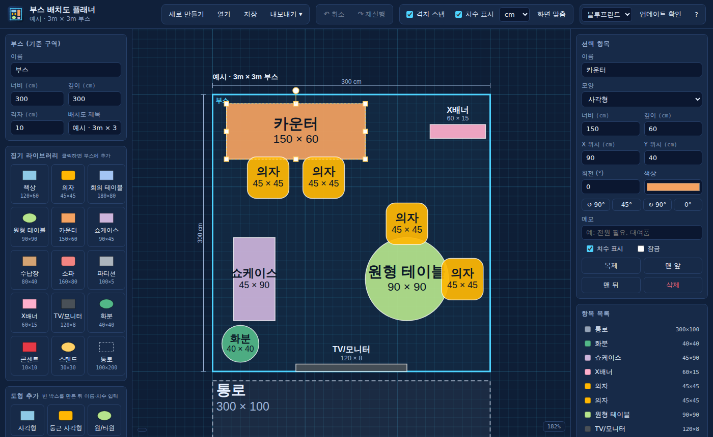
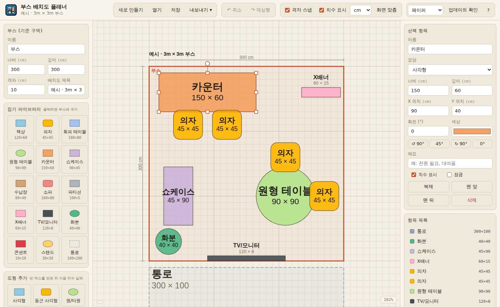
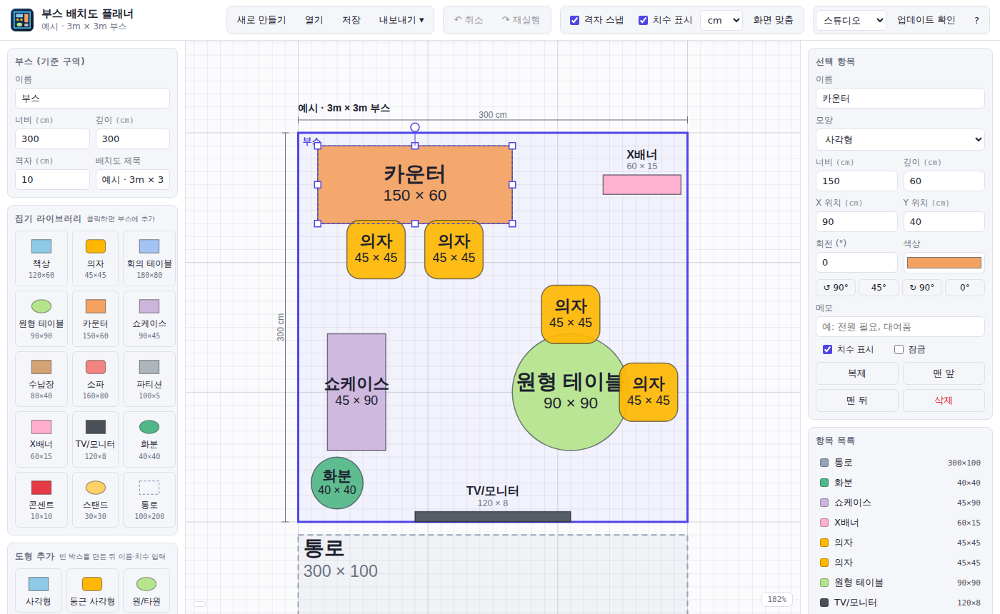

같은 기능·같은 배치도를 세 가지 스타일로 보여줍니다. 마음에 드는 스타일의 「이 스타일로 열기」를 누르면 앱이 그 테마로 열립니다.
앱 안에서도 상단 테마 메뉴로 언제든 바꿀 수 있습니다. (기본값: 블루프린트)

제도용 청사진 느낌의 어두운 배경. 격자와 부스 외곽선이 시안색으로 또렷하게 보여 도면 작업에 집중하기 좋습니다. 장시간 작업 시 눈이 편합니다.
이 스타일로 열기
